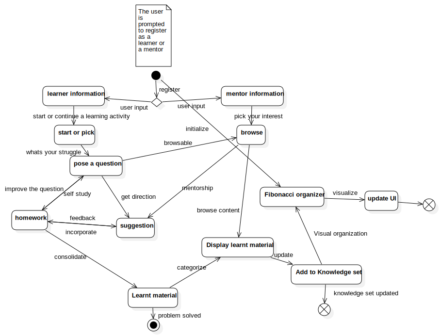

# Code for creating an interface through with teachers can pick questions from the internet and enter them into
#their training database in a hierarchy of learning material, in a structured form (following Fibonacci model).
#code for Inspiration engine: keeps presenting fresh blogs off of the internet to keep the creative fluid flowing.
#The software can be trained to provide relevant content based upon our user's profile. This profile is generated
#by the coach. Through our software we intend to make a coach capable of keeping track of each student's progress
#.
#We record the student's activities across various tools he uses for learning. The learning could be of any kind.
#Google, Facebook, Linkedin, Github, twitter login data could be used to suggest learning content to the Coach.
#The coach can pick the content and compile them into a sequence of short activities specialized to this student's
#strength and interests. This brings in the human interaction with the student to ask a set of questions that the
#student is supposed to know. If the student doesn't know these concepts that underlie these questions. The coach
#can cherry pick the materials off the lot that has been suggested to the coach by our engine.
#The coach can choose to provide some special offers to certain students to interact with them over video, phone
#,whatsapp messaging or email.
#The charges could be as nominal as $7 a month or Rs. 500 a month.
# Otherwise, an automated service is always deployed at emailing each and every participant using a set of
#creative algorithms. Human touch costs Money. The money minus operational cost goes to the teacher.

from IPython.display import YouTubeVideo
BenglaStaticsAverage = YouTubeVideo("https://www.youtube.com/watch?v=WRiUQfc7_24&index=20&list=PLf8s9Ul-L6Iof4cZMouk-EkYXnIL7nULa")
BenglaStaticsAverage
statistics_playlist = YouTubeVideo("https://www.youtube.com/playlist?list=PLf8s9Ul-L6Iof4cZMouk-EkYXnIL7nULa")
statistics_playlist
worldhistory = YouTubeVideo("https://www.youtube.com/playlist?list=PLB-Lv26C8inrClOc0g7RHUGpgX3DScIEU")
worldhistory
lifeLongLearning = YouTubeVideo("https://www.youtube.com/playlist?list=PL7QeoPKpBlIWFQ9nfBi_6LA7dmWxSslzl")
lifeLongLearning
#Or DIY projects like this for musical projects
ukulele = YouTubeVideo("https://www.youtube.com/watch?v=rgsb4yP8Y3c")
ukulele
#or this
mini_amplifier = YouTubeVideo("https://www.youtube.com/watch?v=ov6ym4sSD18")
mini_amplifier